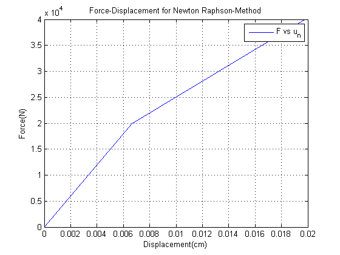

clear all; close all; clc;
disp ('%-------------------------------------------------------------------------%')
disp ('% CEE570 - Finite Element Method %')
disp ('% Spring 2016 %')
disp ('% Submitted By: BHAVESH SHRIMALI% ')
disp ('%-------------------------------------------------------------------------%')
La=10; Lb=5; L=La+Lb;
F_ext=[2e4;4e4];
epsilon_y=0.002;
E=1e7;A=1;d=0;
E_t=1e5;sigma_y=2e4;
varepsilon=1e-12;
state_a=0;state_b=0;
F_int=0;
K=E*A*(La^-1+Lb^-1);
for i=1:length(F_ext)
Fe=F_ext(i);
iter_count=0;
res_o=Fe-F_int;
res=Fe-F_int;
while(abs(res)>varepsilon*abs(res_o))
iter_count=iter_count+1;
del_d=res/K;
d=d+del_d;
d_arr(iter_count,i)=d;
epsilon_a=d/La;
epsilon_b=d/Lb;
if epsilon_a<=epsilon_y
Fa_int=E*epsilon_a*A;
Ka=E*A/La;
else
Fa_int=(E_t*(epsilon_a-epsilon_y)+sigma_y)*A;
Ka=E_t*A/La;
end
if epsilon_b<=epsilon_y
Fb_int=E*epsilon_b*A;
Kb=E*A/Lb;
else
Fb_int=(E_t*(epsilon_b-epsilon_y)+sigma_y)*A;
Kb=E_t*A/Lb;
end
K=Ka+Kb;
F_int=Fa_int+Fb_int;
res=Fe-F_int;
Residual(iter_count,i)=res;
end
iterations(i)=iter_count;
displacement(i)=d;
end
u_n=vertcat(0,[max(d_arr(:,1));max(d_arr(:,2))]);
Fext=vertcat(0,F_ext);
Res_store=Residual(:,2);
d_final=horzcat(d_arr(:,2),Res_store);
plot(u_n,Fext);
grid on;
xlabel('Displacement(cm)');ylabel('Force(N)');
title('Force-Displacement for Newton Raphson-Method');
legend('F vs u_n');
%-------------------------------------------------------------------------%
% CEE570 - Finite Element Method %
% Spring 2016 %
% Submitted By: BHAVESH SHRIMALI%
%-------------------------------------------------------------------------%
